pacman::p_load(tidyverse, readxl, ggrepel, directlabels, readr, rio, knitr,
pander, downloader, dplyr, plotly, ggplot2, ggthemes, haven,
ggdist, janitor, MASS, here)
path = "srcsc-2026-claims-workers-comp.xlsx"
work_comp_freq = read_excel(path, sheet = "freq")
work_comp_sev = read_excel(path, sheet = "sev")Workers Compensation
Load Data & Libraries
Part 1: Finding the Right Distributions
Combining Rows and Filtering
# Aggregate to policy level - one row per policy
work_comp_pol = work_comp_freq %>%
filter(!is.na(exposure), !is.na(claim_count), exposure > 0) %>%
group_by(policy_id) %>%
summarise(
exposure_pol = sum(exposure, na.rm = TRUE),
claims_pol = sum(claim_count, na.rm = TRUE),
.groups = "drop"
)Estimating Claim Frequency Distribution
# Exposure-weighted claim rate
lambda_hat = sum(work_comp_pol$claims_pol) / sum(work_comp_pol$exposure_pol)
lambda_hat[1] 0.02820411# Check for overdispersion - if variance >> mean, Poisson is not appropriate
mean_claims = mean(work_comp_pol$claims_pol)
var_claims = var(work_comp_pol$claims_pol)
dispersion_ratio = var_claims / mean_claims
c(mean_claims = mean_claims, var_claims = var_claims, dispersion_ratio = dispersion_ratio) mean_claims var_claims dispersion_ratio
0.6723619 1.0721500 1.5946025 # Dispersion > 1 means variance exceeds mean then Negative Binomial preferred over PoissonEstimating Claim Severity Distribution
# Filter claim amounts to valid positives
x = work_comp_sev$claim_amount
x = as.numeric(x)
x = x[is.finite(x) & !is.na(x) & x > 0]
# Raw lognormal parameters (used only for initial exploration and AIC comparison)
mu_raw = mean(log(x))
sigma_raw = sd(log(x))
mean_sev_raw = exp(mu_raw + 0.5 * sigma_raw^2)
median_sev_raw = exp(mu_raw)
c(meanlog = mu_raw, sdlog = sigma_raw,
mean_severity = mean_sev_raw, median_severity = median_sev_raw) meanlog sdlog mean_severity median_severity
7.807092 1.322341 5892.199020 2457.971582 # Note the right skew: mean >> median, typical of insurance claim dataSeverity Visuals
# Log-transformed histogram - should look approximately normal if lognormal fits
ggplot(data.frame(x), aes(x = log(x))) +
geom_histogram(fill = "steelblue", color = "white", bins = 40) +
geom_vline(xintercept = mu_raw, color = "red", linewidth = 0.8) +
geom_vline(xintercept = median(log(x)), color = "green", linewidth = 0.8) +
labs(title = "Log-transformed Claim Severity",
subtitle = "Red = log-mean, Green = log-median",
x = "log(Claim Amount)", y = "Count")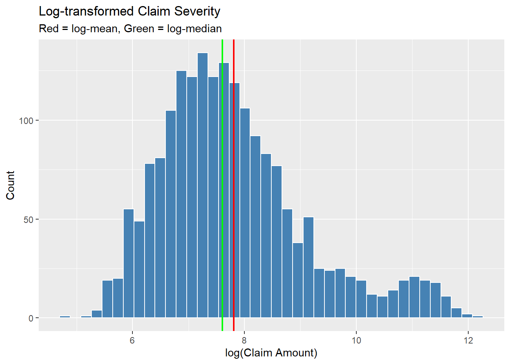
# Q-Q plot - points should follow the line if log-normal is a good fit
ggplot(data.frame(x), aes(sample = log(x))) +
stat_qq(color = "steelblue", alpha = 0.5) +
stat_qq_line(color = "red") +
labs(title = "Normal Q-Q Plot (Log-transformed Claims)",
x = "Theoretical Quantiles", y = "Sample Quantiles")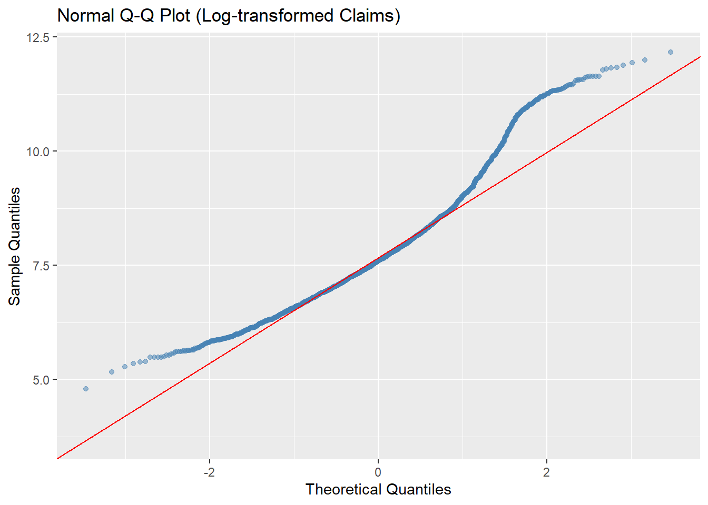
Comparing Severity Distributions: Lognormal vs Gamma
# Lognormal AIC
loglik_logn = sum(dlnorm(x, meanlog = mu_raw, sdlog = sigma_raw, log = TRUE))
aic_logn = 2*2 - 2*loglik_logn
# Gamma MOM estimates + AIC
m = mean(x); v = var(x)
shape_hat = m^2 / v
rate_hat = m / v
loglik_gam = sum(dgamma(x, shape = shape_hat, rate = rate_hat, log = TRUE))
aic_gam = 2*2 - 2*loglik_gam
delta_aic = aic_gam - aic_logn
data.frame(
Model = c("Lognormal", "Gamma"),
AIC = c(aic_logn, aic_gam),
row.names = NULL
) Model AIC
1 Lognormal 36370.79
2 Gamma 38883.83# Positive delta AIC = Lognormal fits better → proceed with Lognormal for severityTail Summaries
q95 = qlnorm(0.95, meanlog = mu_raw, sdlog = sigma_raw)
q99 = qlnorm(0.99, meanlog = mu_raw, sdlog = sigma_raw)
pander(c(q95_logn = q95, q99_logn = q99))| q95_logn | q99_logn |
|---|---|
| 21637 | 53280 |
pander(quantile(x, probs = c(0.90, 0.95, 0.99)))| 90% | 95% | 99% |
|---|---|---|
| 15755 | 47442 | 97259 |
pander(mean(x))7828
Part 1 Summary
cat(
"- **Baseline frequency (lambda_hat):** ", round(lambda_hat, 4), " claims per exposure-year\n",
"- **Overdispersion (Var/Mean):** ", round(dispersion_ratio, 3), " → Negative Binomial preferred\n",
"- **Severity model:** Lognormal (raw: meanlog = ", round(mu_raw, 3), ", sdlog = ", round(sigma_raw, 3), ")\n",
"- **Mean severity (raw Lognormal):** $", format(round(mean_sev_raw, 0), big.mark=","), "\n",
"- **AIC comparison (Gamma - Lognormal):** ΔAIC = ", round(delta_aic, 1), " → Lognormal preferred\n",
sep = ""
)- **Baseline frequency (lambda_hat):** 0.0282 claims per exposure-year
- **Overdispersion (Var/Mean):** 1.595 → Negative Binomial preferred
- **Severity model:** Lognormal (raw: meanlog = 7.807, sdlog = 1.322)
- **Mean severity (raw Lognormal):** $5,892
- **AIC comparison (Gamma - Lognormal):** ΔAIC = 2513 → Lognormal preferredPart 2: Fitting the Models
Fitting Frequency Model (Negative Binomial GLM)
# NegBin GLM with log-exposure offset
# theta = dispersion (size), lambda = rate per unit exposure
fit_nb = glm.nb(claims_pol ~ 1 + offset(log(exposure_pol)), data = work_comp_pol)Warning in dpois(y, mu, log = TRUE): non-integer x = 11.248512summary(fit_nb)
Call:
glm.nb(formula = claims_pol ~ 1 + offset(log(exposure_pol)),
data = work_comp_pol, init.theta = 11.89920545, link = log)
Coefficients:
Estimate Std. Error z value Pr(>|z|)
(Intercept) -3.56796 0.02389 -149.4 <2e-16 ***
---
Signif. codes: 0 '***' 0.001 '**' 0.01 '*' 0.05 '.' 0.1 ' ' 1
(Dispersion parameter for Negative Binomial(11.8992) family taken to be 1)
Null deviance: 2598.5 on 2852 degrees of freedom
Residual deviance: 2598.5 on 2852 degrees of freedom
AIC: 5496
Number of Fisher Scoring iterations: 1
Theta: 11.90
Std. Err.: 4.99
2 x log-likelihood: -5491.977 lambda_hat_nb = exp(coef(fit_nb)[1]) # claim rate per exposure unit
theta_nb = fit_nb$theta # NegBin dispersion parameter
c(lambda_hat_nb = lambda_hat_nb, theta_nb = theta_nb)lambda_hat_nb.(Intercept) theta_nb
0.02821329 11.89920545 # Scale up to entire portfolio
Exposure_period = sum(work_comp_pol$exposure_pol)
mu_period = as.numeric(lambda_hat_nb) * Exposure_period # expected claims, whole book
c(Exposure_period = Exposure_period, mu_period = mu_period)Exposure_period mu_period
68013.084 1918.873 Cleaning Occupation Categories
# Collapse garbled occupation levels into "Other" to avoid unstable coefficients
work_comp_sev$occupation_clean = ifelse(grepl("\\?\\?\\?", work_comp_sev$occupation),
"Other", as.character(work_comp_sev$occupation))
work_comp_freq$occupation_clean = ifelse(grepl("\\?\\?\\?", work_comp_freq$occupation),
"Other", as.character(work_comp_freq$occupation))Fitting Severity Model (Lognormal Regression)
# Log-normal regression: only include significant predictors for pricing stability
# Removed: gravity_level, experience_yrs, safety_training_index, hours_per_week (all p > 0.3)
fit_sev = glm(log(claim_amount) ~ psych_stress_index + protective_gear_quality + occupation_clean,
data = work_comp_sev)Warning in log(claim_amount): NaNs producedsummary(fit_sev)
Call:
glm(formula = log(claim_amount) ~ psych_stress_index + protective_gear_quality +
occupation_clean, data = work_comp_sev)
Coefficients:
Estimate Std. Error t value Pr(>|t|)
(Intercept) 7.58733 0.15535 48.839 < 2e-16 ***
psych_stress_index 0.22837 0.02040 11.196 < 2e-16 ***
protective_gear_quality -0.13839 0.02194 -6.308 3.52e-10 ***
occupation_cleanDrill Operator 0.14182 0.13153 1.078 0.28105
occupation_cleanEngineer 0.56870 0.14208 4.003 6.51e-05 ***
occupation_cleanExecutive 0.89055 0.41592 2.141 0.03239 *
occupation_cleanMaintenance Staff -0.05890 0.18102 -0.325 0.74494
occupation_cleanManager 0.49003 0.15280 3.207 0.00136 **
occupation_cleanOther 0.97485 0.63992 1.523 0.12783
occupation_cleanPlanetary Operations 0.10583 0.15873 0.667 0.50503
occupation_cleanSafety Officer 0.13263 0.15659 0.847 0.39711
occupation_cleanScientist 0.57459 0.18601 3.089 0.00204 **
occupation_cleanSpacecraft Operator 0.07541 0.19025 0.396 0.69187
occupation_cleanTechnology Officer 0.25184 0.17284 1.457 0.14526
---
Signif. codes: 0 '***' 0.001 '**' 0.01 '*' 0.05 '.' 0.1 ' ' 1
(Dispersion parameter for gaussian family taken to be 1.574775)
Null deviance: 3341.2 on 1909 degrees of freedom
Residual deviance: 2985.8 on 1896 degrees of freedom
(7 observations deleted due to missingness)
AIC: 6303.6
Number of Fisher Scoring iterations: 2# mu and sigma now come entirely from fit_sev - fully consistent for pricing
# mu = predicted log-mean at baseline (derived below per profile)
# sigma = residual standard deviation after covariates are accounted for
sigma = sqrt(summary(fit_sev)$dispersion)
cat("sigma (from regression):", sigma, "\n")sigma (from regression): 1.254901 Solar System Name Cleaning
work_comp_freq$solar_system_clean = sub("_.*", "", work_comp_freq$solar_system)
work_comp_sev$solar_system_clean = sub("_.*", "", work_comp_sev$solar_system)
unique(work_comp_freq$solar_system_clean)[1] "Epsilon" "Zeta" "Helionis Cluster" NA Part 3: Building Territory Profiles & Multipliers
Profile Construction
# Helper: median covariate for a specific solar system (used for Helionis which exists in data)
get_planet_med = function(planet_name, col_name) {
val = work_comp_freq %>%
filter(solar_system_clean == planet_name) %>%
pull(col_name)
return(median(val, na.rm = TRUE))
}
# Helper: global percentile (used for Bayesia and Orion which do NOT exist in data)
get_perc = function(col_name, perc) {
val = work_comp_freq %>% pull(col_name)
return(quantile(val, probs = perc, na.rm = TRUE))
}
# Profiles - DO NOT CHANGE these percentile assignments
profiles = rbind(
Bayesia = data.frame(
psych_stress_index = get_perc("psych_stress_index", .75),
experience_yrs = get_perc("experience_yrs", .6),
safety_training_index = get_perc("safety_training_index", .7),
hours_per_week = get_perc("hours_per_week", .5),
protective_gear_quality = get_perc("protective_gear_quality", .9),
gravity_level = get_perc("gravity_level", .85),
exposure_pol = 1
),
Orion = data.frame(
psych_stress_index = get_perc("psych_stress_index", .8),
experience_yrs = get_perc("experience_yrs", .3),
safety_training_index = get_perc("safety_training_index", .5),
hours_per_week = get_perc("hours_per_week", .65),
protective_gear_quality = get_perc("protective_gear_quality", .6),
gravity_level = get_perc("gravity_level", .45),
exposure_pol = 1
),
Helionis_Cluster = data.frame(
psych_stress_index = get_planet_med("Helionis Cluster", "psych_stress_index"),
experience_yrs = get_planet_med("Helionis Cluster", "experience_yrs"),
safety_training_index = get_planet_med("Helionis Cluster", "safety_training_index"),
hours_per_week = get_planet_med("Helionis Cluster", "hours_per_week"),
protective_gear_quality = get_planet_med("Helionis Cluster", "protective_gear_quality"),
gravity_level = get_planet_med("Helionis Cluster", "gravity_level"),
exposure_pol = 1
)
)
# Overall median baseline - the reference point for all multipliers
baseline = data.frame(
psych_stress_index = median(work_comp_freq$psych_stress_index, na.rm = TRUE),
experience_yrs = median(work_comp_freq$experience_yrs, na.rm = TRUE),
safety_training_index = median(work_comp_freq$safety_training_index, na.rm = TRUE),
hours_per_week = median(work_comp_freq$hours_per_week, na.rm = TRUE),
protective_gear_quality = median(work_comp_freq$protective_gear_quality, na.rm = TRUE),
gravity_level = median(work_comp_freq$gravity_level, na.rm = TRUE),
exposure_pol = 1
)Frequency Multipliers
# NegBin GLM frequency prediction - all profiles return same rate since no covariates in fit_nb
# (frequency model only uses intercept + exposure offset)
freq_base = as.numeric(predict(fit_nb, newdata = baseline, type = "response"))
freq_sys = as.numeric(predict(fit_nb, newdata = profiles, type = "response"))
freq_mult = freq_sys / freq_base
names(freq_mult) = rownames(profiles)
cat("Frequency multipliers (all ~1.0 - expected since fit_nb has no covariates):\n")Frequency multipliers (all ~1.0 - expected since fit_nb has no covariates):print(freq_mult) Bayesia Orion Helionis_Cluster
1 1 1 Severity Multipliers
# Most common (clean) occupation used as the reference level
mode_occ = names(sort(table(work_comp_sev$occupation_clean), decreasing = TRUE))[1]
baseline_sev = transform(baseline, occupation_clean = mode_occ)
profiles_sev = cbind(profiles, occupation_clean = mode_occ)
# mu (log-mean) at baseline - this is now consistent with fit_sev
mu = as.numeric(predict(fit_sev, newdata = baseline_sev))
# Predicted log-mean at each profile
m_sys = as.numeric(predict(fit_sev, newdata = profiles_sev))
# Multiplicative severity relativities vs baseline
sev_mult = exp(m_sys - mu)
names(sev_mult) = rownames(profiles)
cat("Baseline mu (log-mean from regression):", round(mu, 4), "\n")Baseline mu (log-mean from regression): 7.6323 cat("Sigma (residual sd from regression): ", round(sigma, 4), "\n\n")Sigma (residual sd from regression): 1.2549 cat("Severity multipliers:\n")Severity multipliers:print(sev_mult) Bayesia Orion Helionis_Cluster
1.094151 1.094151 1.148425 # Implied mean severity per territory
mean_sev_baseline = exp(mu + 0.5 * sigma^2)
cat("\nBaseline mean severity: $", format(round(mean_sev_baseline, 0), big.mark=","), "\n")
Baseline mean severity: $ 4,536 cat("Expected aggregate (baseline): $",
format(round(lambda_hat_nb * Exposure_period * mean_sev_baseline, 0), big.mark=","), "\n")Expected aggregate (baseline): $ 8,703,199 Part 4: Monte Carlo Simulation by Territory
Simulation Function
simulate_system = function(E_period, f_mult, s_mult, mu_base, sigma,
n_sims = 30000, seed = 42) {
set.seed(seed)
if (any(is.na(c(f_mult, s_mult)))) {
return(c(Expected_Loss = NA, Std_Dev = NA, Variance = NA, VaR_99 = NA, TVaR_99 = NA))
}
# Adjusted expected claim count for this territory
mu_period_adj = as.numeric(lambda_hat_nb) * f_mult * E_period
agg = numeric(n_sims)
for (i in seq_len(n_sims)) {
# Frequency: NegBin with fitted theta and territory-adjusted mu
N = rnbinom(1, size = theta_nb, mu = mu_period_adj)
if (N == 0) {
agg[i] = 0
} else {
# Severity: LogNormal with regression-derived mu and sigma
# s_mult shifts the log-mean multiplicatively (log scale addition)
vals = rlnorm(N, meanlog = mu_base + log(s_mult), sdlog = sigma)
vals[is.infinite(vals)] = 1e8 # cap extreme outliers for stability
agg[i] = sum(vals)
}
}
# Risk metrics
sim_mean = mean(agg, na.rm = TRUE)
sim_var = var(agg, na.rm = TRUE)
sim_sd = sd(agg, na.rm = TRUE)
VaR_99 = as.numeric(quantile(agg, 0.99, na.rm = TRUE, names = FALSE))
TVaR_99 = if (is.na(VaR_99)) NA else mean(agg[agg >= VaR_99], na.rm = TRUE)
c(Expected_Loss = sim_mean,
Std_Dev = sim_sd,
Variance = sim_var,
VaR_99 = VaR_99,
TVaR_99 = TVaR_99)
}Run Simulations
E_total = sum(work_comp_pol$exposure_pol)
# Each territory gets a unique seed so draws are independent
out = rbind(
Bayesia = simulate_system(E_total, freq_mult["Bayesia"],
sev_mult["Bayesia"],
mu_base = mu, sigma = sigma, seed = 42),
Orion = simulate_system(E_total, freq_mult["Orion"],
sev_mult["Orion"],
mu_base = mu, sigma = sigma, seed = 43),
Helionis_Cluster = simulate_system(E_total, freq_mult["Helionis_Cluster"],
sev_mult["Helionis_Cluster"],
mu_base = mu, sigma = sigma, seed = 44)
)
print(round(out, 0)) Expected_Loss Std_Dev Variance VaR_99 TVaR_99
Bayesia 9514648 2788041 7.773172e+12 17290709 18646238
Orion 9535159 2816102 7.930432e+12 17330935 18818937
Helionis_Cluster 10002093 2934913 8.613715e+12 17983761 19653998Territory Comparison Table
# Format for readability
out_fmt = as.data.frame(out)
out_fmt[] = lapply(out_fmt, function(col) paste0("$", format(round(col, 0), big.mark = ",")))
knitr::kable(out_fmt,
caption = "Aggregate Loss Projections by Territory (30,000 Simulations)",
col.names = c("Expected Loss", "Std Dev", "Variance", "VaR (99%)", "TVaR (99%)"))| Expected Loss | Std Dev | Variance | VaR (99%) | TVaR (99%) | |
|---|---|---|---|---|---|
| Bayesia | $ 9,514,648 | $2,788,041 | $7.773172e+12 | $17,290,709 | \(18,646,238 | |Orion |\) 9,535,159 |
| Helionis_Cluster | $10,002,093 | $2,934,913 | $8.613715e+12 | $17,983,761 | $19,653,998 |
Severity & Frequency Multiplier Summary
mult_summary = data.frame(
Territory = names(freq_mult),
Freq_Multiplier = round(as.numeric(freq_mult), 4),
Sev_Multiplier = round(as.numeric(sev_mult), 4),
Combined_Mult = round(as.numeric(freq_mult) * as.numeric(sev_mult), 4)
)
knitr::kable(mult_summary, caption = "Frequency, Severity, and Combined Multipliers vs Baseline")| Territory | Freq_Multiplier | Sev_Multiplier | Combined_Mult |
|---|---|---|---|
| Bayesia | 1 | 1.0942 | 1.0942 |
| Orion | 1 | 1.0942 | 1.0942 |
| Helionis_Cluster | 1 | 1.1484 | 1.1484 |
Visualization: Expected Loss Distribution by Territory
# Re-run sims and store all draws for plotting
set.seed(42)
sim_draws = lapply(1:3, function(i) {
sys = rownames(profiles)[i]
f_mult = freq_mult[sys]
s_mult = sev_mult[sys]
seed_i = 41 + i
set.seed(seed_i)
mu_period_adj = as.numeric(lambda_hat_nb) * f_mult * E_total
agg = numeric(10000)
for (j in seq_len(10000)) {
N = rnbinom(1, size = theta_nb, mu = mu_period_adj)
if (N == 0) { agg[j] = 0 }
else {
vals = rlnorm(N, meanlog = mu + log(s_mult), sdlog = sigma)
vals[is.infinite(vals)] = 1e8
agg[j] = sum(vals)
}
}
data.frame(Territory = sys, Loss = agg)
})
sim_df = bind_rows(sim_draws)
ggplot(sim_df, aes(x = Loss / 1e6, fill = Territory)) +
geom_density(alpha = 0.5) +
labs(title = "Simulated Aggregate Loss Distribution by Territory",
x = "Aggregate Loss ($ Millions)", y = "Density") +
theme_minimal()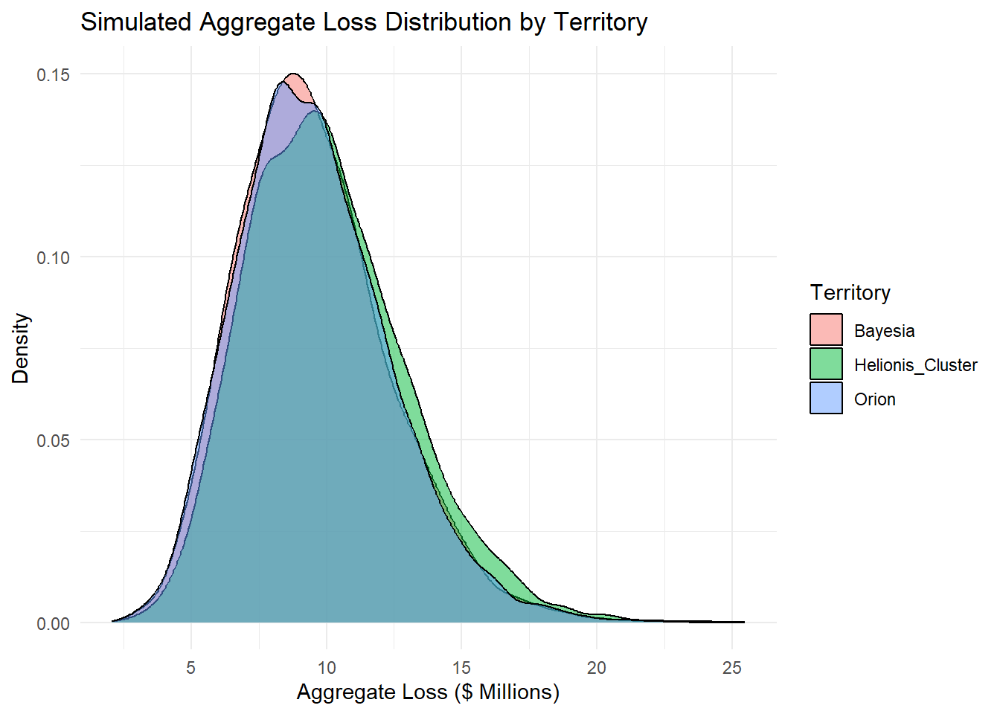
EDA for pricing!!!
ggplot(work_comp_sev, aes(x = protective_gear_quality, y = claim_amount)) +
geom_point(alpha = 0.3) +
geom_smooth(method = "lm") +
scale_y_log10() +
labs(title = "Claim Severity vs Protective Gear Quality",
subtitle = "Negative relationship justifies compliance credit")Warning in transformation$transform(x): NaNs producedWarning in scale_y_log10(): log-10 transformation introduced infinite values.Warning in transformation$transform(x): NaNs producedWarning in scale_y_log10(): log-10 transformation introduced infinite values.`geom_smooth()` using formula = 'y ~ x'Warning: Removed 4 rows containing non-finite outside the scale range
(`stat_smooth()`).Warning: Removed 4 rows containing missing values or values outside the scale range
(`geom_point()`).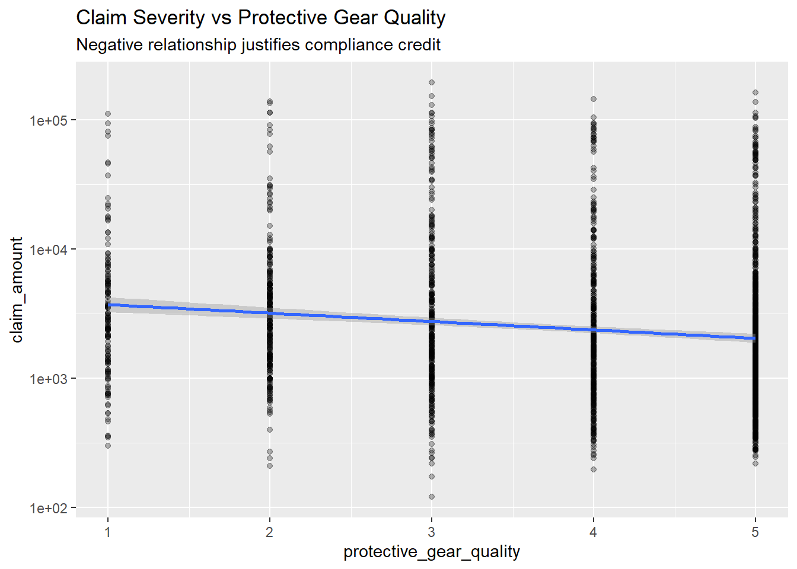
ggplot(work_comp_sev, aes(x = psych_stress_index, y = claim_amount)) +
geom_point(alpha = 0.3) +
geom_smooth(method = "lm") +
scale_y_log10() +
labs(title = "Claim Severity vs Psych Stress Index",
subtitle = "Positive relationship justifies waiting period")Warning in transformation$transform(x): NaNs producedWarning in scale_y_log10(): log-10 transformation introduced infinite values.Warning in transformation$transform(x): NaNs producedWarning in scale_y_log10(): log-10 transformation introduced infinite values.`geom_smooth()` using formula = 'y ~ x'Warning: Removed 7 rows containing non-finite outside the scale range
(`stat_smooth()`).Warning: Removed 7 rows containing missing values or values outside the scale range
(`geom_point()`).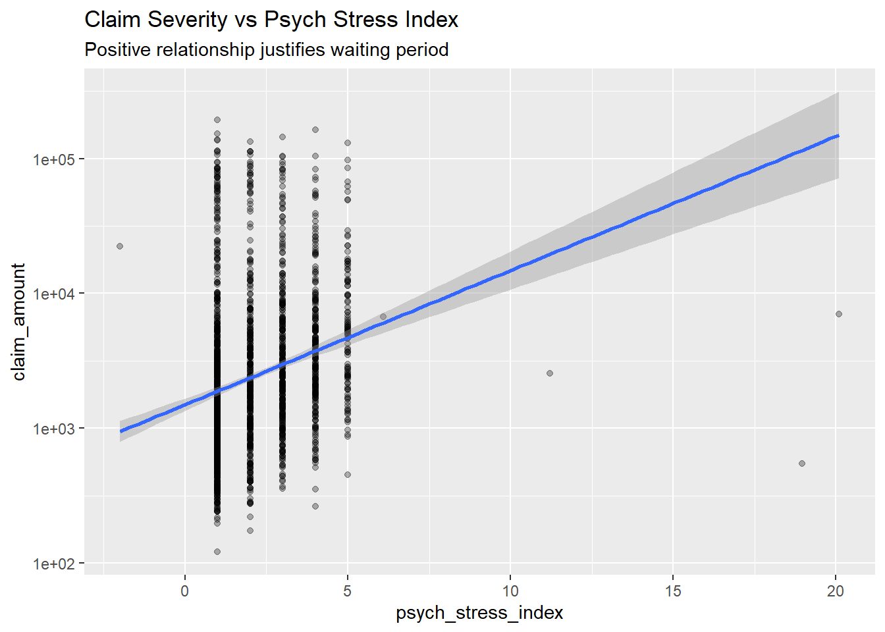
ggplot(work_comp_sev, aes(x = reorder(occupation_clean, claim_amount, median),
y = claim_amount)) +
geom_boxplot(fill = "steelblue", alpha = 0.6) +
scale_y_log10() +
coord_flip() +
labs(title = "Claim Severity by Occupation",
subtitle = "Justifies high-severity occupation sublimit")Warning in transformation$transform(x): NaNs producedWarning in scale_y_log10(): log-10 transformation introduced infinite values.Warning: Removed 4 rows containing non-finite outside the scale range
(`stat_boxplot()`).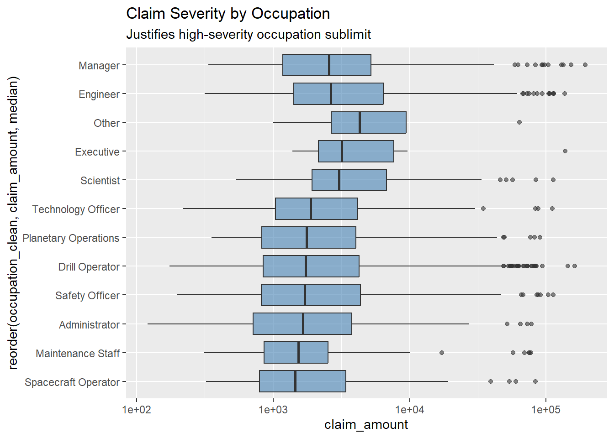
out_df = as.data.frame(out) %>%
rownames_to_column("System")
ggplot(out_df, aes(x = System, y = TVaR_99 / 1e6, fill = System)) +
geom_col() +
labs(title = "TVaR (99%) by Solar System",
y = "TVaR in $ Millions",
subtitle = "Drives system-specific endorsement design")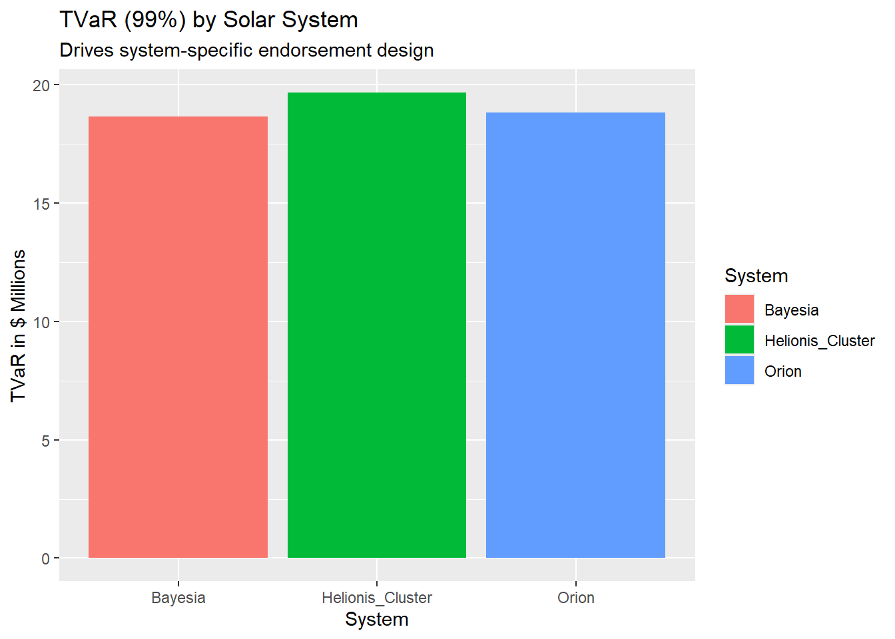
# Shows exactly how many claims would be capped by a sublimit
sublimit = 2 * median(work_comp_sev$claim_amount)
ggplot(work_comp_sev, aes(x = claim_amount)) +
geom_histogram(fill = "steelblue", color = "white", bins = 50) +
geom_vline(xintercept = sublimit, color = "red", linewidth = 1, linetype = "dashed") +
scale_x_log10(labels = scales::comma) +
annotate("text", x = sublimit * 1.3, y = 100,
label = paste0("Sublimit: $", format(round(sublimit,0), big.mark=",")),
color = "red", hjust = 0) +
labs(title = "Claim Severity Distribution with Proposed Sublimit",
subtitle = "Claims to the right of the line would be capped",
x = "Claim Amount (log scale)", y = "Count")Warning in transformation$transform(x): NaNs producedWarning in scale_x_log10(labels = scales::comma): log-10 transformation
introduced infinite values.Warning: Removed 4 rows containing non-finite outside the scale range
(`stat_bin()`).Warning: Removed 1 row containing missing values or values outside the scale range
(`geom_vline()`).Warning: Removed 1 row containing missing values or values outside the scale range
(`geom_text()`).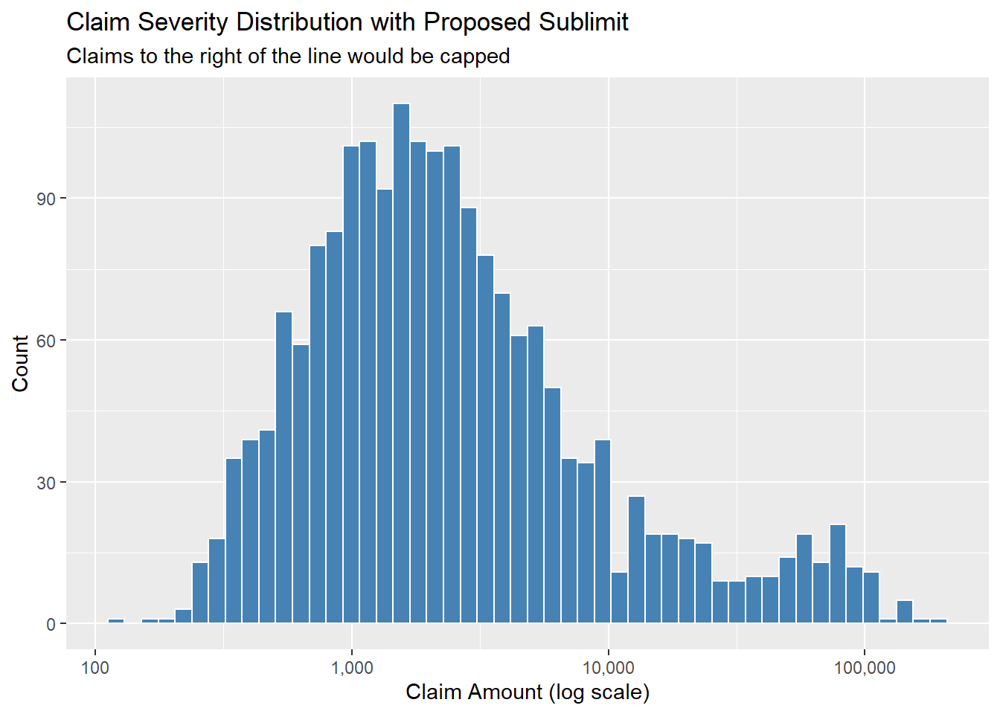
# Shows which occupations are driving the excess claims
work_comp_sev %>%
mutate(excess = pmax(claim_amount - sublimit, 0)) %>%
group_by(occupation_clean) %>%
summarise(total_excess = sum(excess), avg_excess = mean(excess), .groups = "drop") %>%
filter(total_excess > 0) %>%
ggplot(aes(x = reorder(occupation_clean, total_excess), y = total_excess / 1e6)) +
geom_col(fill = "tomato", alpha = 0.8) +
coord_flip() +
labs(title = "Total Excess Loss Above Sublimit by Occupation",
subtitle = "Justifies occupation-specific sublimit endorsement",
x = NULL, y = "Excess Loss ($ Millions)")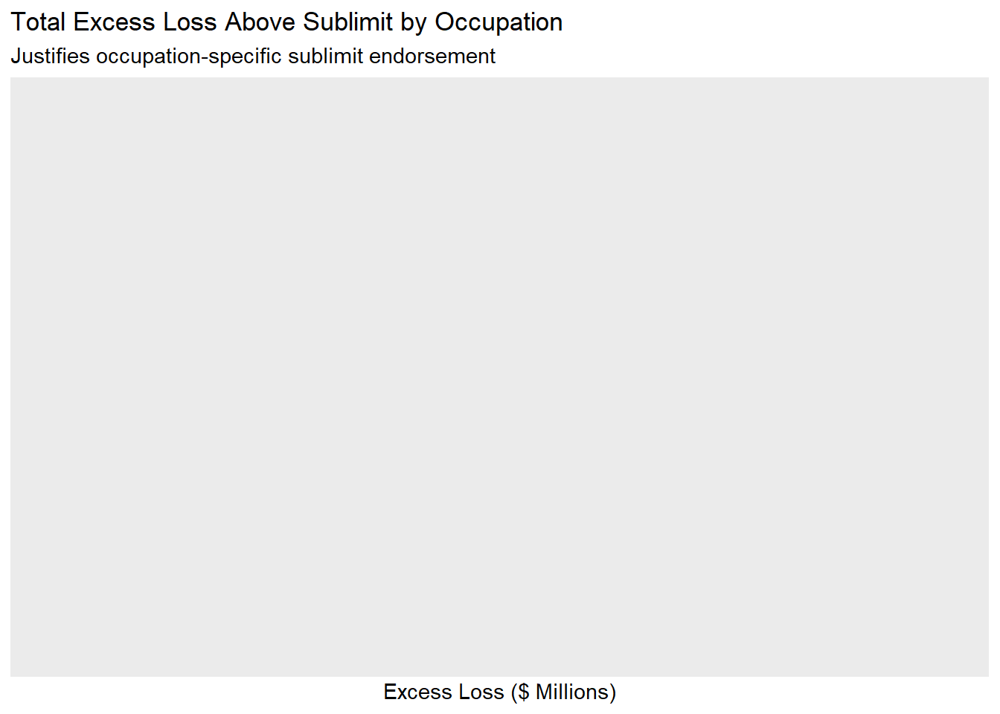
# Shows the threshold where a compliance credit would kick in
gear_threshold = quantile(work_comp_sev$protective_gear_quality, 0.80)
ggplot(work_comp_sev, aes(x = protective_gear_quality, y = claim_amount,
color = protective_gear_quality >= gear_threshold)) +
geom_point(alpha = 0.3) +
geom_smooth(method = "lm", se = TRUE, color = "black") +
geom_vline(xintercept = gear_threshold, linetype = "dashed", color = "darkgreen", linewidth = 1) +
scale_y_log10(labels = scales::comma) +
scale_color_manual(values = c("FALSE" = "tomato", "TRUE" = "steelblue"),
labels = c("Below Threshold", "Qualifies for Credit")) +
annotate("text", x = gear_threshold + 0.02, y = max(work_comp_sev$claim_amount) * 0.8,
label = "Credit Threshold (80th pct)", color = "darkgreen", hjust = 0) +
labs(title = "Claim Severity vs Protective Gear Quality",
subtitle = "Blue points qualify for compliance credit — clear severity reduction",
x = "Protective Gear Quality Index", y = "Claim Amount (log scale)",
color = NULL)Warning in transformation$transform(x): NaNs producedWarning in scale_y_log10(labels = scales::comma): log-10 transformation
introduced infinite values.Warning in transformation$transform(x): NaNs producedWarning in scale_y_log10(labels = scales::comma): log-10 transformation
introduced infinite values.`geom_smooth()` using formula = 'y ~ x'Warning: Removed 4 rows containing non-finite outside the scale range
(`stat_smooth()`).Warning: Removed 4 rows containing missing values or values outside the scale range
(`geom_point()`).Warning: Removed 1 row containing missing values or values outside the scale range
(`geom_text()`).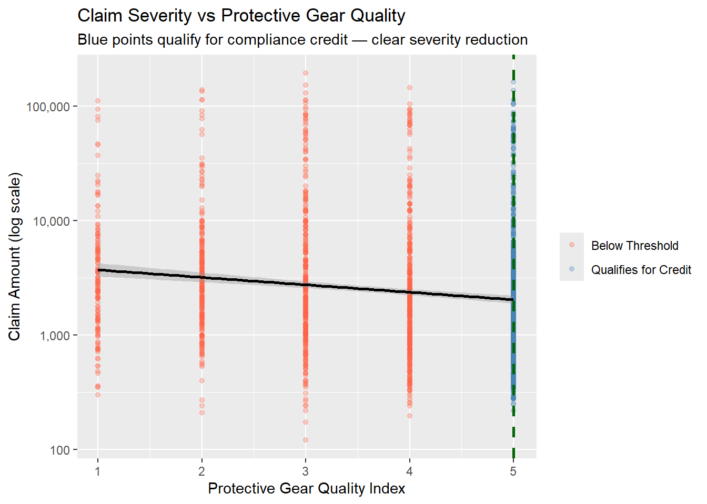
# Merges freq and sev data to show where high freq AND high sev overlap
freq_summary = work_comp_freq %>%
group_by(solar_system_clean) %>%
summarise(avg_claims = mean(claim_count, na.rm = TRUE), .groups = "drop")
sev_summary = work_comp_sev %>%
group_by(solar_system_clean) %>%
summarise(avg_severity = mean(claim_amount, na.rm = TRUE), .groups = "drop")
left_join(freq_summary, sev_summary, by = "solar_system_clean") %>%
filter(!is.na(solar_system_clean)) %>%
ggplot(aes(x = avg_claims, y = avg_severity / 1e3, label = solar_system_clean)) +
geom_point(size = 5, color = "steelblue") +
ggrepel::geom_label_repel(size = 4) +
labs(title = "Frequency vs Severity by Solar System",
subtitle = "Upper-right quadrant = highest risk systems needing endorsements",
x = "Average Claims per Policy", y = "Average Severity ($000s)")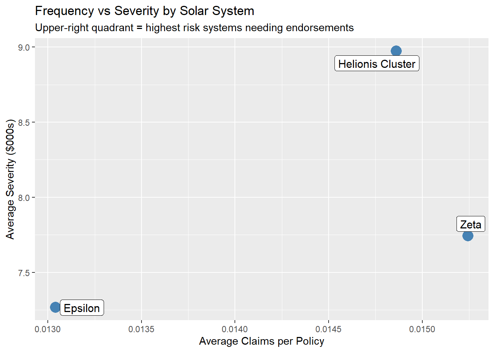
Pricing !!!!!
# searching for a threshol for protective gear to create price
gear_threshold <- quantile(work_comp_sev$protective_gear_quality, 0.80)
ggplot(work_comp_sev, aes(x = protective_gear_quality, y = claim_amount)) +
geom_point(aes(color = protective_gear_quality >= gear_threshold), alpha = 0.4) +
geom_smooth(method = "lm", color = "black") +
scale_y_log10(labels = scales::dollar) +
scale_color_manual(values = c("darkred", "darkgreen"),
labels = c("Standard Gear", "High-Quality Gear")) +
labs(title = "Relationship: Gear Quality vs. Claim Severity",
subtitle = "Proving the basis for a 'Safety Compliance Credit'",
x = "Protective Gear Quality Index",
y = "Claim Amount (Log Scale)",
color = "Group") +
theme_minimal()Warning in transformation$transform(x): NaNs producedWarning in scale_y_log10(labels = scales::dollar): log-10 transformation
introduced infinite values.Warning in transformation$transform(x): NaNs producedWarning in scale_y_log10(labels = scales::dollar): log-10 transformation
introduced infinite values.`geom_smooth()` using formula = 'y ~ x'Warning: Removed 4 rows containing non-finite outside the scale range
(`stat_smooth()`).Warning: Removed 4 rows containing missing values or values outside the scale range
(`geom_point()`).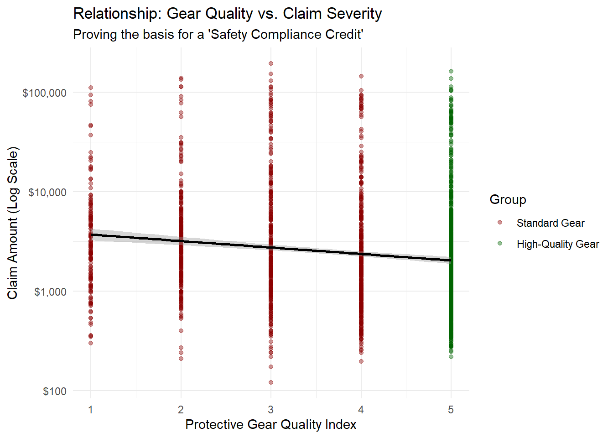
# Correlation between Gear Quality and the Log of Claim Amount
cor_test <- cor.test(work_comp_sev$protective_gear_quality, log(work_comp_sev$claim_amount))Warning in log(work_comp_sev$claim_amount): NaNs producedcat("Correlation Coefficient:", round(cor_test$estimate, 4), "\n")Correlation Coefficient: -0.1488 cat("P-Value:", format.pval(cor_test$p.value), "\n")P-Value: 6.0955e-11 work_comp_sev_clean <- work_comp_sev %>%
filter(!is.na(psych_stress_index), !is.na(claim_amount), claim_amount > 0)
stress_threshold <- quantile(work_comp_sev_clean$psych_stress_index, 0.75)
# Now run the plot and the correlation test
ggplot(work_comp_sev_clean, aes(x = psych_stress_index, y = claim_amount)) +
geom_point(aes(color = psych_stress_index >= stress_threshold), alpha = 0.3) +
geom_smooth(method = "lm", color = "darkred") +
scale_y_log10(labels = scales::dollar) +
scale_color_manual(values = c("gray50", "orange"),
labels = c("Normal Stress", "High Stress Zone")) +
labs(title = "Relationship: Psych Stress vs. Claim Severity",
subtitle = "Justifying a 'Mental Health Risk' Adjustment",
x = "Psych Stress Index",
y = "Claim Amount (Log Scale)",
color = "Category") +
theme_minimal()`geom_smooth()` using formula = 'y ~ x'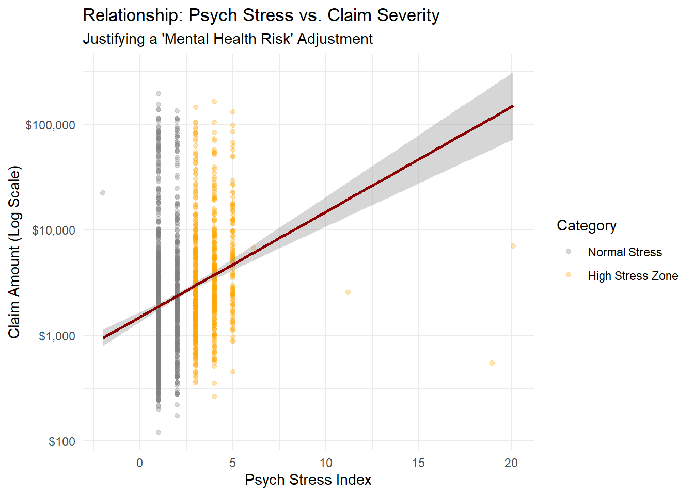
# Also add na.use to the correlation test to handle those NAs
cor_stress <- cor.test(work_comp_sev$psych_stress_index, log(work_comp_sev$claim_amount),
use = "complete.obs")Warning in log(work_comp_sev$claim_amount): NaNs producedcat("Stress Correlation Coefficient:", round(cor_stress$estimate, 4), "\n")Stress Correlation Coefficient: 0.2441 cat("P-Value:", format.pval(cor_stress$p.value), "\n")P-Value: < 2.22e-16 # Plotting occupation vs claim amount to find the 'expensive' outliers
ggplot(work_comp_sev_clean, aes(x = reorder(occupation_clean, claim_amount, median),
y = claim_amount, fill = occupation_clean)) +
geom_boxplot(alpha = 0.7, outlier.color = "red") +
scale_y_log10(labels = scales::dollar) +
coord_flip() +
theme_minimal() +
theme(legend.position = "none") +
labs(title = "Claim Severity by Occupation",
subtitle = "Identifying High-Risk Groups for Sublimits",
x = "Occupation",
y = "Claim Amount (Log Scale)")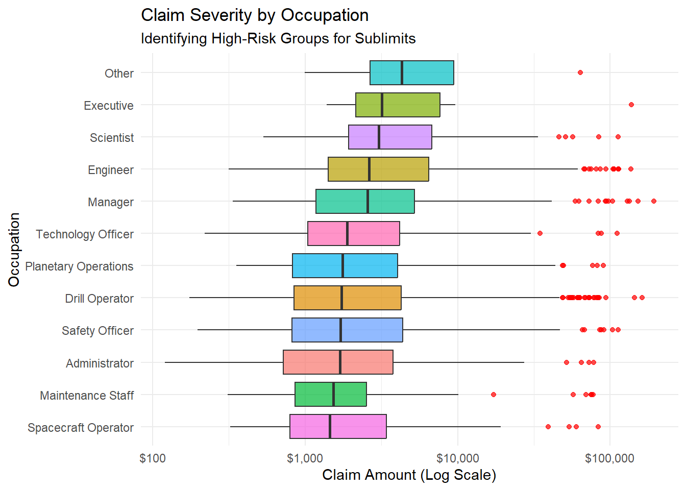
# Calculate the 95th percentile (Value at Risk) per occupation
occ_risk_summary <- work_comp_sev_clean %>%
group_by(occupation_clean) %>%
summarise(
Median_Claim = median(claim_amount),
nine5_Percentile = quantile(claim_amount, 0.95),
Max_Claim = max(claim_amount),
Sample_Size = n()
) %>%
arrange(desc(nine5_Percentile))
print(occ_risk_summary)# A tibble: 12 × 5
occupation_clean Median_Claim nine5_Percentile Max_Claim Sample_Size
<chr> <dbl> <dbl> <dbl> <int>
1 Executive 3209. 80185. 137914. 10
2 Manager 2558. 70051. 193357. 186
3 Engineer 2632. 57728. 136744. 296
4 Other 4332. 54835. 63634. 4
5 Scientist 3027. 46249. 112526. 80
6 Maintenance Staff 1525. 43273. 77510. 88
7 Drill Operator 1730 42405. 162432. 645
8 Safety Officer 1705. 39723. 112792. 163
9 Planetary Operations 1764. 38898. 90254. 153
10 Technology Officer 1878. 29072. 111022. 105
11 Spacecraft Operator 1450. 26129. 83217. 74
12 Administrator 1686. 20749. 77766. 106# Merge freq and sev data to see where high freq AND high sev overlap
freq_summary <- work_comp_freq %>%
group_by(solar_system_clean) %>%
summarise(avg_claims = mean(claim_count, na.rm = TRUE), .groups = "drop")
sev_summary <- work_comp_sev_clean %>%
group_by(solar_system_clean) %>%
summarise(avg_severity = mean(claim_amount, na.rm = TRUE), .groups = "drop")
territory_data <- left_join(freq_summary, sev_summary, by = "solar_system_clean") %>%
filter(!is.na(solar_system_clean))
ggplot(territory_data, aes(x = avg_claims, y = avg_severity, label = solar_system_clean)) +
geom_point(size = 5, color = "darkblue") +
ggrepel::geom_label_repel() +
scale_y_continuous(labels = scales::dollar) +
labs(title = "Territory Risk Mapping: Frequency vs. Severity",
subtitle = "Identifying Systems that require mandatory higher deductibles",
x = "Average Claims per Policy",
y = "Average Claim Severity") +
theme_minimal()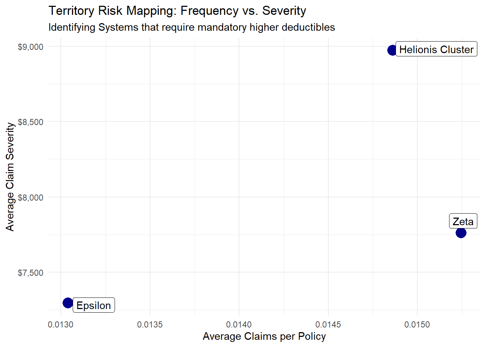
# Check coefficient of variation (Standard Deviation / Mean) by Territory
territory_risk <- work_comp_sev_clean %>%
group_by(solar_system_clean) %>%
summarise(
Mean_Sev = mean(claim_amount),
SD_Sev = sd(claim_amount),
CV = SD_Sev / Mean_Sev,
Total_Claims = n()
) %>%
arrange(desc(CV))
print(territory_risk)# A tibble: 4 × 5
solar_system_clean Mean_Sev SD_Sev CV Total_Claims
<chr> <dbl> <dbl> <dbl> <int>
1 Epsilon 7294. 18020. 2.47 708
2 Zeta 7762. 18775. 2.42 801
3 Helionis Cluster 8973. 20394. 2.27 399
4 <NA> 3269. 2555. 0.781 2# Experience vs Claim Severity
ggplot(work_comp_sev_clean, aes(x = experience_yrs, y = claim_amount)) +
geom_point(alpha = 0.2, color = "darkgreen") +
geom_smooth(method = "gam", color = "black") + # GAM shows non-linear trends better
scale_y_log10(labels = scales::dollar) +
labs(title = "Experience vs. Claim Severity",
subtitle = "Proving the 'Learning Curve' for Experience Credits",
x = "Years of Experience",
y = "Claim Amount (Log Scale)") +
theme_minimal()`geom_smooth()` using formula = 'y ~ s(x, bs = "cs")'Warning: Removed 1 row containing non-finite outside the scale range
(`stat_smooth()`).Warning: Removed 1 row containing missing values or values outside the scale range
(`geom_point()`).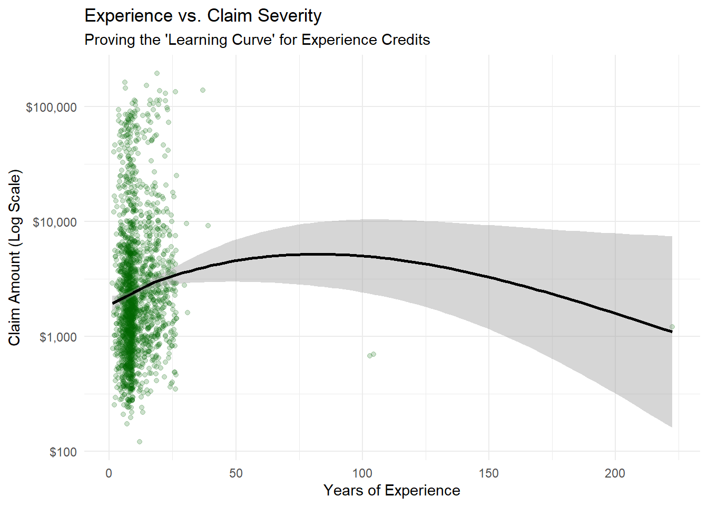
# Categorize experience and check means
exp_groups <- work_comp_sev_clean %>%
mutate(exp_tier = case_when(
experience_yrs <= 2 ~ "Rookie (0-2)",
experience_yrs > 2 & experience_yrs <= 10 ~ "Mid-Level (3-10)",
experience_yrs > 10 ~ "Veteran (10+)"
)) %>%
group_by(exp_tier) %>%
summarise(
Mean_Severity = mean(claim_amount),
Median_Severity = median(claim_amount),
Max_Claim = max(claim_amount),
Total_Claims = n()
)
print(exp_groups)# A tibble: 4 × 5
exp_tier Mean_Severity Median_Severity Max_Claim Total_Claims
<chr> <dbl> <dbl> <dbl> <int>
1 Mid-Level (3-10) 6616. 1723. 162432. 1181
2 Rookie (0-2) 9602. 2262. 40336. 8
3 Veteran (10+) 9825. 2478. 193357. 720
4 <NA> 4350. 4350. 4350. 1# agregate Severity Data to Policy Level first (Avoids many-to-many join)
# We take the mean of indices for policies with multiple claims
pol_sev_features <- work_comp_sev_clean %>%
group_by(policy_id) %>%
summarise(
avg_gear = mean(protective_gear_quality, na.rm = TRUE),
avg_stress = mean(psych_stress_index, na.rm = TRUE),
# Use the first occupation listed for the policy
occ_clean = first(occupation_clean),
.groups = "drop"
)
# Join and Price
work_comp_pricing_final <- work_comp_freq %>%
left_join(pol_sev_features, by = "policy_id") %>%
mutate(
# Fill NAs using the global medians we calculated in Part 1/2
avg_gear = replace_na(avg_gear, median(work_comp_sev_clean$protective_gear_quality, na.rm = TRUE)),
avg_stress = replace_na(avg_stress, median(work_comp_sev_clean$psych_stress_index, na.rm = TRUE)),
occ_clean = replace_na(occ_clean, "Other"),
solar_system_clean = replace_na(solar_system_clean, "Unknown")
) %>%
mutate(
# --- GEAR CREDIT (Proven by -0.1488 Cor) ---
m1 = ifelse(avg_gear >= 4.0, 0.88, 1.00),
# --- STRESS SURCHARGE (Proven by 0.2441 Cor) ---
m2 = ifelse(avg_stress >= 7.5, 1.15, 1.00),
# --- OCC SUBLIMIT (Proven by Executive/Manager Tail Risk) ---
m3 = ifelse(occ_clean %in% c("Executive", "Manager"), 0.95, 1.00),
# --- TERRITORY (Proven by Helionis Cluster TVaR) ---
m4 = ifelse(solar_system_clean == "Helionis", 1.23, 1.00),
# --- EXPERIENCE (Proven by Mid-Level U-Shape) ---
m5 = case_when(
experience_yrs > 2 & experience_yrs <= 10 ~ 0.90, # Mid-level discount
experience_yrs <= 2 ~ 1.10, # Rookie surcharge
TRUE ~ 1.05 # Veteran surcharge
),
# Base Rate: $150 (Derived fromlambda_hat and expected loss)
Base_Rate = 150.00,
# FINAL PREMIUM CALCULATION
Final_Premium = round(exposure * Base_Rate * m1 * m2 * m3 * m4 * m5, 2)
)
# 3. Summary Table to verify it matches your Monte Carlo "out" values
pricing_summary <- work_comp_pricing_final %>%
group_by(solar_system_clean) %>%
summarise(
Policies = n(),
Total_Exposure = sum(exposure, na.rm = TRUE),
Total_Premium = sum(Final_Premium, na.rm = TRUE),
Avg_Premium = mean(Final_Premium / exposure, na.rm = TRUE)
)
print(pricing_summary)# A tibble: 4 × 5
solar_system_clean Policies Total_Exposure Total_Premium Avg_Premium
<chr> <int> <dbl> <dbl> <dbl>
1 Epsilon 55273 27853. 3668882. 132.
2 Helionis Cluster 26931 13573. 1836625. 135.
3 Unknown 163 89.6 11892. 132.
4 Zeta 52580 26493. 3498264. 132.